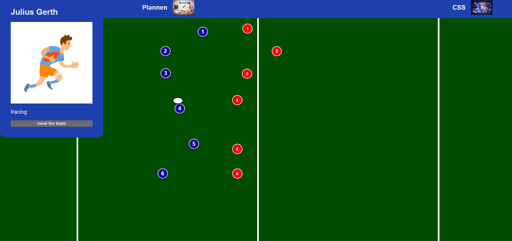

Weekly Nerd #1 — Nils Binder
CSS Grid, stop-motion animaties, mix-blend-mode en view transitions.
Lees verslag →CSS Grid, stop-motion animaties, mix-blend-mode en view transitions.
Lees verslag →Hoe browsers werken, rendering engines, defer vs async en browsergeschiedenis.
Lees verslag →Stop using JS for that — native HTML en CSS alternatieven voor veelgebruikte JS-patronen.
Lees verslag →Toegankelijke formulieren bouwen met de NL Design System richtlijnen.
Lees verslag →Digitale onafhankelijkheid, planned obsolescence en de travelling server.
Lees verslag →WCAG-richtlijnen en toegankelijkheid vanuit drie echte gebruikers.
Lees verslag →Remove every excuse — design systems, governance, AI in development en toegankelijkheid.
Lees verslag →Headless CMS, NL Design System, digitale toegankelijkheid en offline-first / PWA's.
Lees verslag →The Web You Want, part 1 — het web moet ons allemaal dienen, te beginnen bij duurzaamheid.
Lees verslag →The Web You Want, part 2 — AI als interpreter, augmentatie vs compensatie en accessibility as resistance.
Lees verslag →Hoe meet je de impact van UX/design? Over waarde-architectuur, ROI en het TARS-model.
Lees verslag →Een overzicht van de projecten die ik dit jaar heb gemaakt.

Een goede planning is heel handig en maakt het werken aan een project veel overzichtelijker.
Link naar repository →
Wat voor mij logisch is, is niet voor iedereen logisch. Je moet dingen echt duidelijk maken voor de gebruiker.
Link naar repository →
Met CSS kun je tegenwoordig heel veel bereiken — steeds vaker is CSS een betere keuze dan JavaScript.
Link naar repository →
Communicatie binnen een team is key. Zonder goede afstemming gaat een website snel kapot.
Link naar repository →
Soms moet je conventions loslaten en je eigen richting opgaan om echt iets te maken dat werkt voor de gebruiker.
Link naar repository →
Ik heb geleerd hoe je een volledige 3D-website bouwt en wat de echte kracht van JavaScript is.
Link naar repository →Maak eerst een strak plan voordat je gaat beginnen, zo hoef je niet halverwege helemaal opnieuw te beginnen. Vooral tijdens het vak Browser Techw kwam ik erachter dat wat voor mij goed werkt, helemaal niet goed hoeft te werken voor andere mensen. Bij CSS merkte ik hoeveel ik afhang van classes, want toen ik alleen selectors moest gebruiken moest ik echt heel veel switchen. Tijdens API heb ik veel geleerd over JavaScript. Ik was er altijd wel een beetje bang voor en wilde het altijd zo min mogelijk gebruiken, ook al kon het mijn website echt verbeteren. Maar nu ik er wat beter in ben geworden, wil ik het vaker gebruiken.
Wat mij het meest is bijgebleven, is dat je vaak minder nodig hebt dan je denkt, zoals dat je al heel ver kan komen met alleen HTML en CSS. En dat je ook echt moet nadenken of je website echt wel toegankelijk is voor iedere gebruiker, en als dat niet zo is, dat je de gebruiker de mogelijkheid meegeeft om de ervaring aan te passen.
Ik ben blij met hoe de hackaton is gegaan. Er werd goed gewerkt en het resultaat is er. Er waren soms wat setback-momenten, maar daar kwamen we dan als team overheen. Alleen jammer dat we niet hadden gewonnen.
Ik wil leren om aan het begin van elk project een duidelijke planning te maken met concrete tussendoelen, zodat ik overzicht houd en niet op het laatste moment in tijdnood kom. Dit doe ik door elk project op te splitsen in kleinere taken en hier deadlines aan te koppelen.
Ik wil leren om binnen een team beter te communiceren over voortgang en knelpunten, zodat we altijd op één lijn zitten en niemand hoeft te wachten of dubbel werk doet. Dit doe ik door actief te vragen en te melden wat ik doe, en dan ook aan te geven als iets niet lukt, zodat mijn team me kan helpen.
Ik houd documentatie nu te beknopt aan — ik voeg zelden plaatjes of code snippets toe en schrijf vaak maar een paar zinnen. Ik wil leren om documentatie echt als onderdeel van het proces te zien, door per project screenshots, relevante code en een duidelijke uitleg toe te voegen zodat het ook voor anderen (en mijn toekomstige zelf) begrijpelijk is.
Tijdens de meesterproef ben ik met een geweldig team aan de slag gegaan met het maken van datavisualisaties voor de visdeurbel. In de 5 weken die we hadden, hebben we een mooi product neergezet waar ze hopelijk wat aan hebben. Het was een leuke opdracht om te doen, zeker voor iemand die zo bekend is. Soms waren er wat moeilijkheden met merge conflicts, maar dat kwam omdat we geen goede gitignore hadden — dat zorgde er wel voor dat iedereen bijna 8 ton aan regels heeft toegevoegd, wat wel grappig is om te zien. Ik heb weer veel geleerd, zeker hoe het is om voor meerdere weken iteraties te maken op basis van een opdrachtgever die iedere week feedback geeft.
Tijdens het project heb ik meer gepland voor mezelf, voor wat ik deze week af wil hebben. Dit baseerde ik vooral dan ook op wat de opdrachtgever wilde. Hierdoor heb ik meer overzicht behouden en wist ik wat er nog gedaan moest worden, en dan ook meteen de prioriteit ervan.
Tijdens het project is er beter samengewerkt naarmate het project vorderde. Ik gaf aan waar ik mee bezig was en mijn team deed hetzelfde. Hierdoor heb ik zelf niet iets dubbels gemaakt en hebben we geen tijd verspild.
Dit blijft moeilijk voor mij. Ik had mijn documentatie redelijk bijgehouden, alleen het gaat toch steeds een beetje naar wat ik ervoor deed. Dit kwam omdat ik, als ik bezig was met werken, de documentatie vaak naar de achtergrond liet gaan. En het hielp ook niet dat ik mijn documentatie kwijt was aan het einde.